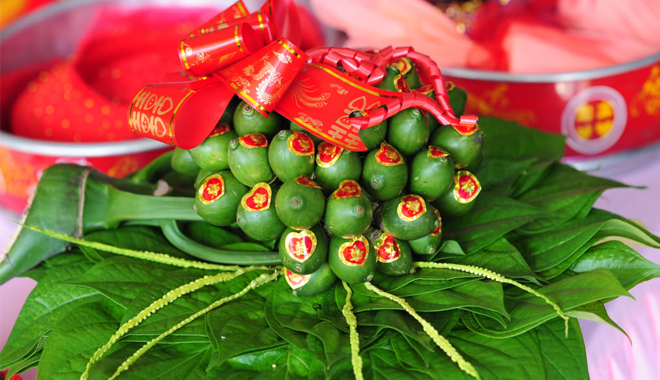
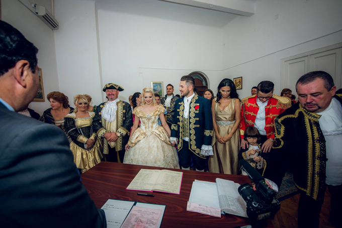
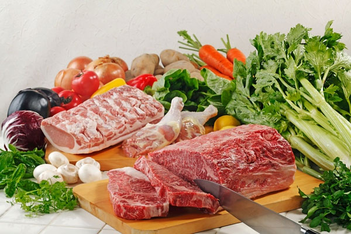
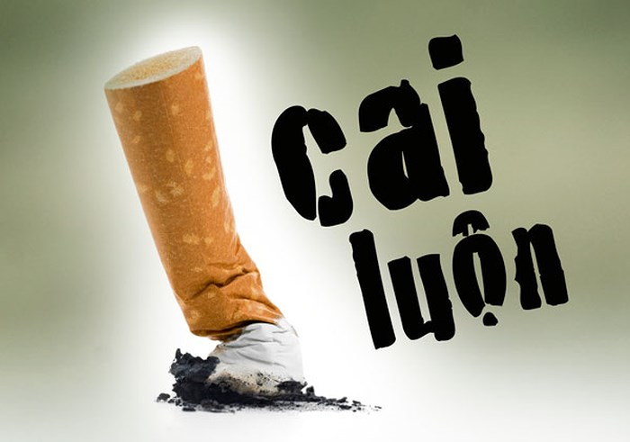

Trong dân gian xưa vẫn hay lưu truyền câu nói khi về ý nghĩa trầu cau trong lễ cưới hỏi: “Miếng trầu ăn kết làm đôi/Lá trầu là vợ, cau tươi là chồng/ Trầu xanh, cau trắng, chay hồng/Vôi pha với nước, thuốc hồng với duyên. Sự kết hợp của trầu cau với vôi tạo nên màu thắm đỏ như màu máu màu son tượng trưng cho nghĩa tình của sự thủy chung, lời thề hẹn trong lễ cưới hỏi của cô dâu chú rể.Cho đến hôm nay thì ý nghĩa của hình tượng trầu cau vẫn không bị mai một trong phong tục lễ cưới hỏi của người Việt. Dù trong lễ cưới hỏi hiện tại cần rất nhiều những sự chuẩn bị từ tìm kiếm ekip chụp ảnh, trang phục, nhà hàng, … nhưng chưa ai quên đi mâm trầu cau đi đầu trong lễ cưới hỏi.

Cô dâu Sandra (thứ 4 từ trái sang) là một nghệ sĩ đến từ Romania. Do yêu thích hình tượng công chúa Disney trên màn ảnh nên Sandra và chồng đã biến đám cưới trở thành lễ hội cosplay các nhân vật này. Cô dâu chọn diện trang phục của nàng Belle trong truyện 'Người đẹp và quái vật' còn dàn phù dâu lần lượt diện các bộ váy của những công chúa Disney khác

Dinh dưỡng hợp lý là nền tảng của sức khỏe và trí tuệ. Một chế độ dinh dưỡng hợp lý đáp ứng đủ nhu cầu cơ thể trong các giai đoạn khác nhau của chu kỳ vòng đời sẽ tạo ra sự tăng trưởng và phát triển tối ưu cho thai nhi và trẻ nhỏ, cũng như phòng chống hữu hiệu với đa số bệnh tật để có một thể lực khỏe mạnh, sức khỏe tốt, năng suất lao động cao và chất lượng cuộc sống tốt cho mọi lứa tuổi. Bữa ăn gia đình chính vì vậy có vai trò vô cùng quan trọng và cần được đảm bảo cả về số lượng và chất lượng. Một bữa ăn cân đối cần có đủ 4 nhóm thực phẩm là nhóm bột đường (chủ yếu từ các loại ngũ cốc), nhóm chất đạm (thịt, cá, trứng, sữa, các loại đậu, đỗ...), nhóm chất béo (mỡ động vật, dầu thực vật), nhóm vitamin và khoáng chất (các loại rau, củ, quả...).

Nhiều người gặp khó khăn khi cai thuốc lá, hoặc dễ bị tái nghiện lại sau một thời gian cố gắng ngưng sử dụng. Việc nắm được những nguyên lý khoa học về cách mà chúng gây nghiện tới cơ thể dưới đây sẽ giúp bạn cai thuốc một cách hiệu quả.